Menghitung Detik
Menuju Selamanya.
Dua tahun yang luar biasa, dan perjalanan kita baru saja dimulai.
Scroll ke bawah untuk melihat jejak kita
Dua tahun yang luar biasa, dan perjalanan kita baru saja dimulai.
Scroll ke bawah untuk melihat jejak kita
Tahun Bersama
Kota Berbeda
Hari Penuh Cerita
Dunia seolah sedang menahan napas karena pandemi saat takdir mempertemukan kita di masa KKN. Awalnya, kita hanyalah dua orang asing yang menjalankan tugas negara, berbincang selayaknya teman seperjuangan di balik masker yang menutupi wajah. Tidak ada kembang api yang meledak seketika; yang ada hanyalah percakapan jujur dan kenyamanan yang tumbuh perlahan di sela-sela kesibukan program kerja yang melelahkan.
Namun, di balik pembatasan fisik dan jarak sosial saat itu, ada getaran yang mulai menyelinap tanpa kita sadari. Kita belajar mengenal satu sama lain bukan dari penampilan, melainkan dari cara kita berpikir dan tertawa di tengah situasi yang serba sulit. Masa KKN itu bukan sekadar pengabdian masyarakat, melainkan bab pembuka di mana aku menyadari bahwa ada sesuatu yang istimewa dalam ketenanganmu yang ingin aku jaga selamanya.
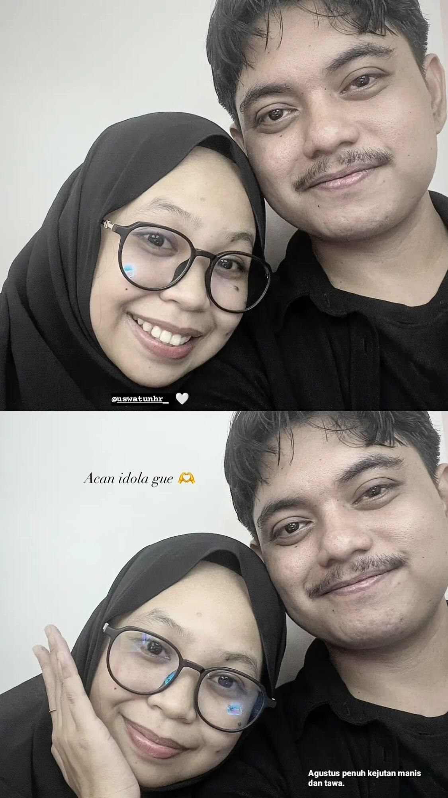
10 Agustus 2024 menjadi hari yang tidak akan pernah terhapus dari ingatan, di tengah keramaian Trans Studio Mall Makassar. Aku ingat betapa bersikerasnya kamu, Uswatun, untuk tidak menerima pernyataan cintaku lewat layar ponsel. Meski jarak sempat membentang di antara kita sebelumnya, hari itu kita akhirnya berdiri berhadapan, dan dengan keberanian penuh, aku menyatakan bahwa hatiku telah memilihmu sebagai pelabuhan terakhirku.
Kebahagiaan itu terasa begitu membumbung, namun semesta langsung memberikan ujian pertamanya tepat sehari setelahnya. Pada 11 Agustus, aku harus berdiri di bandara, melepasmu terbang ke Jogja untuk melanjutkan studi S2. Kita memulai hubungan ini bukan dengan kencan malam minggu yang rutin, melainkan dengan lambaian tangan di gerbang keberangkatan dan janji bahwa jarak hanyalah angka selama hati kita tetap berpijak pada komitmen yang sama.
Pulau Jawa menjadi saksi bisu betapa kerasnya kita berjuang; aku yang menimba ilmu di Kediri dan kamu yang bergelut dengan tesis S2 serta persiapan tes CPNS di Jogja. Januari 2025 menjadi puncak pelarian kita dari segala beban studi dan ambisi masa depan. Seharian penuh di taman hiburan Saloka, kita membuang semua kekhawatiran, bermain dari pagi hingga senja berganti malam, menciptakan tawa yang begitu lepas seolah dunia hanya milik kita berdua.
Namun, tawa itu menyimpan rasa haru karena kita tahu perpisahan lain sudah menanti di depan mata. Februari memanggilmu pulang ke Sulbar setelah kelulusan CPNS-mu, sementara aku harus terbang ke Balikpapan untuk memulai karier profesional di bidang oil and gas Pertamina. Kita kembali ke pola lama—berbagi cerita lewat layar, merayakan keberhasilan masing-masing dari kejauhan, dan terus memupuk rindu di tengah deru mesin industri dan tumpukan berkas kantor.
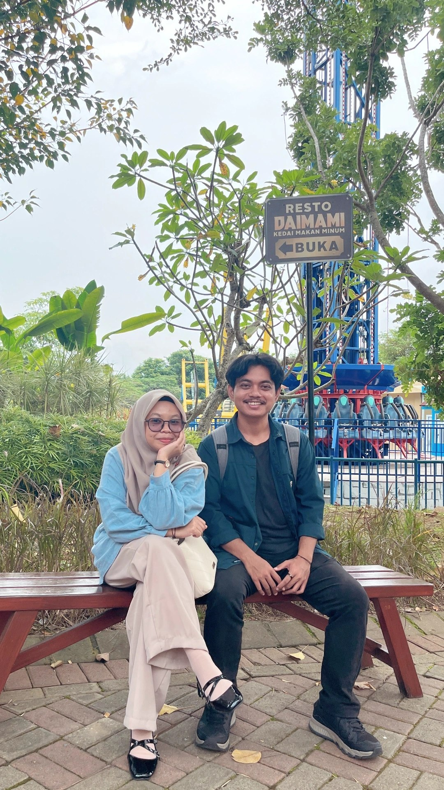
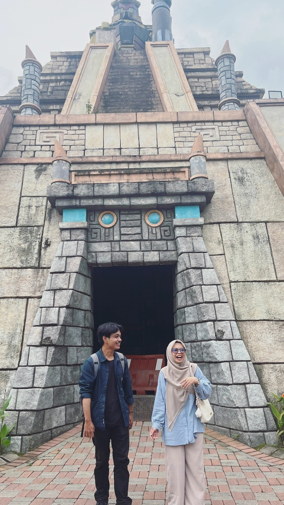
9 Agustus di event Majene Run, aku tidak hanya berlari mengejar garis finish, tetapi aku berlari menuju kehadiranmu yang telah lama kurindukan. Setelah kontrak kerjaku di Balikpapan usai, momen pertemuan itu terasa seperti oase di tengah padang gurun yang sangat luas. Pelukan di Majene hari itu bukan sekadar sapaan, melainkan cara kita melepas beban rindu yang sudah berkarat selama berbulan-bulan terpisah lautan.
Lagi-lagi, kebersamaan itu hanya sekejap sebelum aku harus berangkat ke Sorowako untuk mengabdi sebagai guru di YPS. Di sela-sela kesibukanmu dengan aktualisasi akhir CPNS, aku hanya bisa mengirimkan doa dan dukungan terbaik dari jauh, memastikan kamu tahu bahwa aku selalu bangga pada setiap pencapaianmu. Penantian panjang itu akhirnya menemui titik terang saat Desember tiba dan kontrakku di Sorowako berakhir, membawaku kembali pulang ke arahmu.
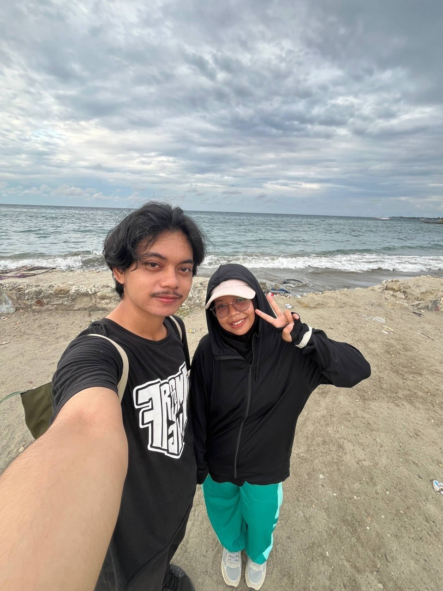
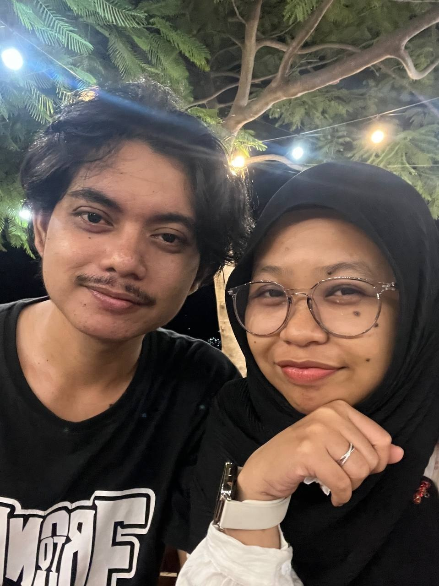
Februari membawa keajaiban yang selama ini hanya berani kita semogakan dalam doa: aku akhirnya mendapatkan pekerjaan di kantor yang sama denganmu di Mamuju Tengah. Untuk pertama kalinya dalam dua tahun, tidak ada lagi layar yang membatasi tatapan kita dan tidak ada lagi bandara yang menjadi tempat perpisahan. Kita akhirnya bisa menjalani keseharian bersama, berbagi ruang dan waktu yang selama ini dirampas oleh jarak.
Namun, kenyataan ternyata tidak selalu semanis mimpi; berada di satu lingkungan yang sama setiap hari membawa tantangan baru yang menguji kedewasaan kita. Menuju tahun kedua ini, kita melewati badai hebat, keributan yang melelahkan, hingga air mata yang sempat jatuh karena perbedaan ego. Tapi di sinilah kita sekarang—setiap kali badai itu reda, kita selalu memilih untuk saling memaafkan, kembali berpelukan, dan membuktikan bahwa cinta kita jauh lebih besar daripada sekadar ego masing-masing.
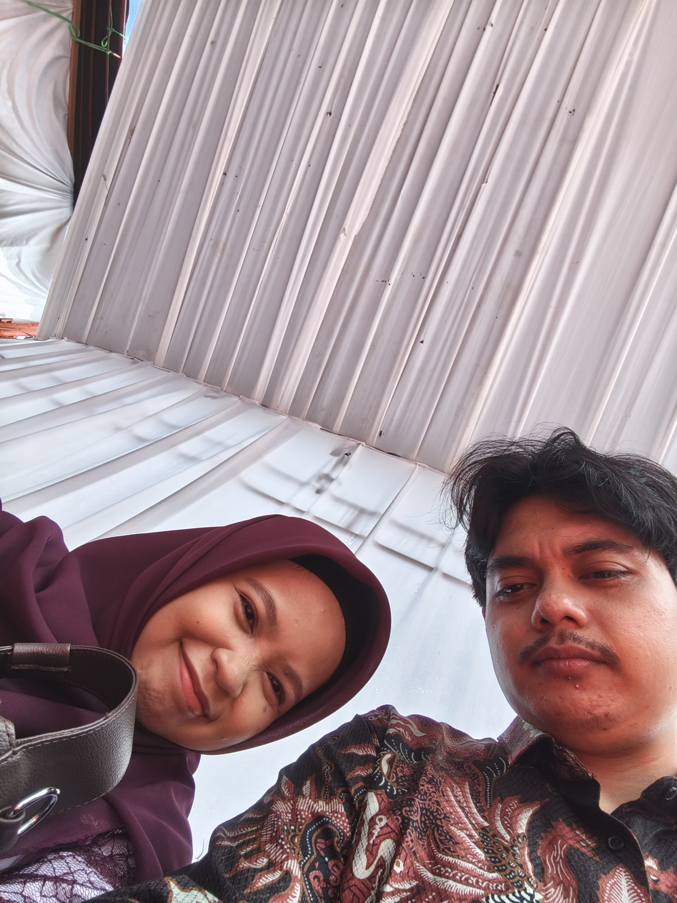
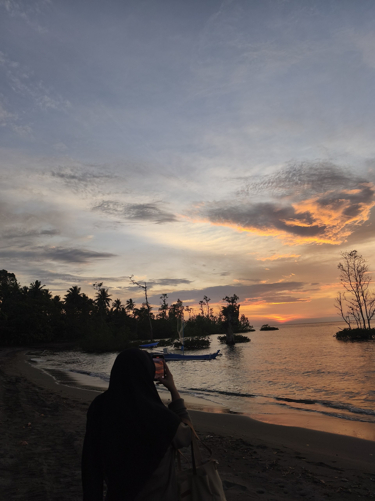
"Sebuah pengingat bahwa kita lebih kuat dari segala jarak dan badai yang pernah ada."
Uswatun, aku selalu kagum melihat bagaimana kamu melewati tahun-tahun yang berat itu—menyelesaikan S2 di Jogja sambil berjuang dengan tes CPNS, sendirian di tanah orang. Aku tahu bebanmu tidak mudah saat itu, tapi kamu membuktikan bahwa kamu adalah wanita yang tangguh. Terima kasih sudah tetap bertahan dan percaya pada 'kita' meski saat itu hanya layar ponsel yang menghubungkan kita.
Aku tahu, masa-masa di Mamuju Tengah belakangan ini tidak selalu indah. Kita menghadapi banyak tantangan baru dan keributan yang terkadang menguras emosi. Namun, seperti yang pernah kita lalui, konflik bukan berarti cinta kita hilang—itu hanya tanda bahwa kita perlu lebih banyak mendengar dan saling memahami lagi. Aku menghargai setiap kali kita memilih untuk saling memaafkan dan kembali berpelukan setelah badai reda.
Kita sudah melewati fase LDR yang berkali-kali memisahkan kita, dari Makassar hingga Sorowako. Sekarang, saat kita akhirnya berada di bawah langit yang sama, aku ingin kita membangun bab baru yang lebih tenang. Aku tetap memilihmu, dan aku percaya kita bisa menghadapi tantangan di kantor atau dalam hidup dengan lebih banyak kesabaran. Ingatlah, kamu tidak perlu membawa segalanya sendirian lagi; aku di sini, tepat di sampingmu.
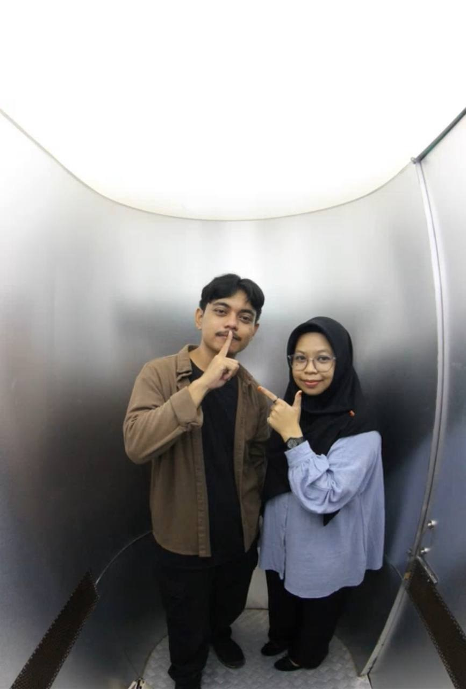
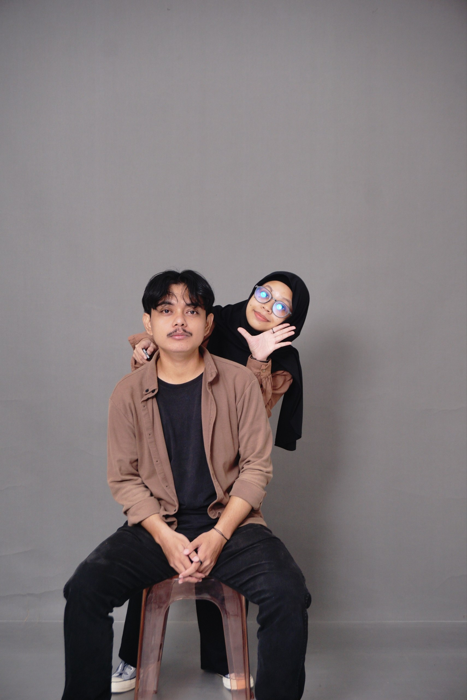
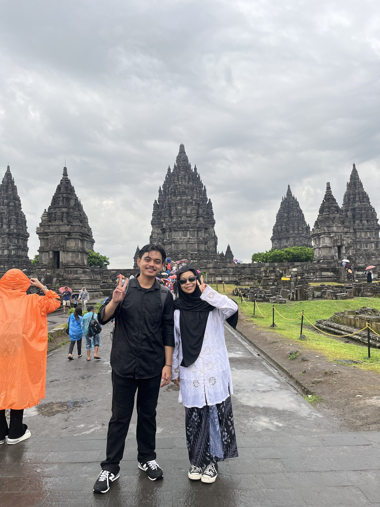
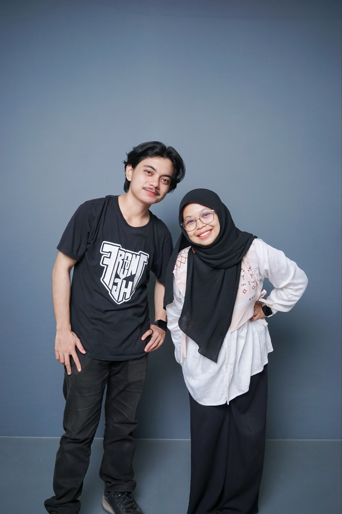
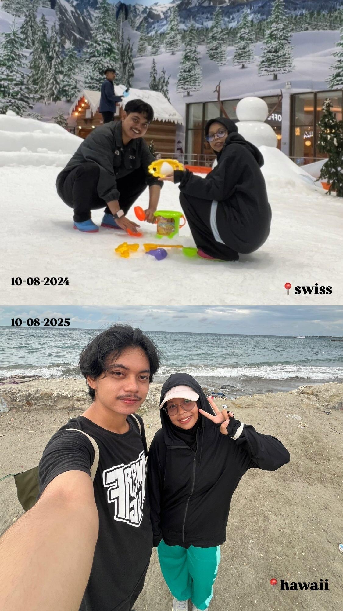
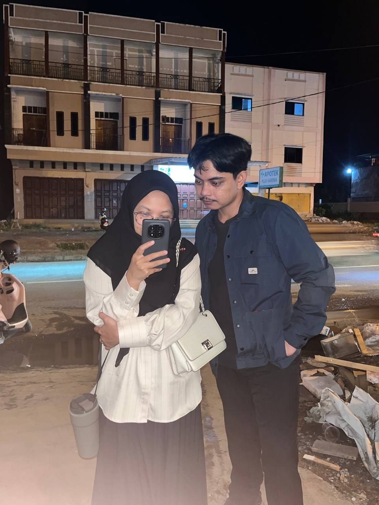
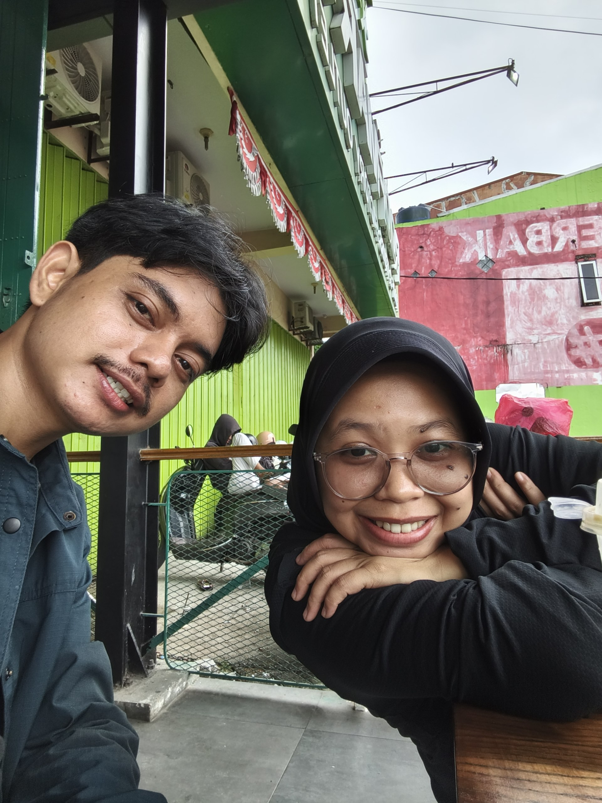
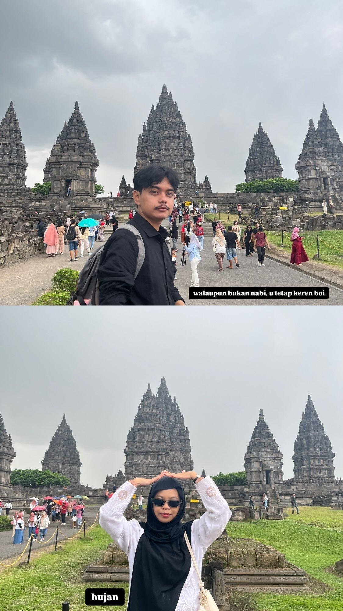